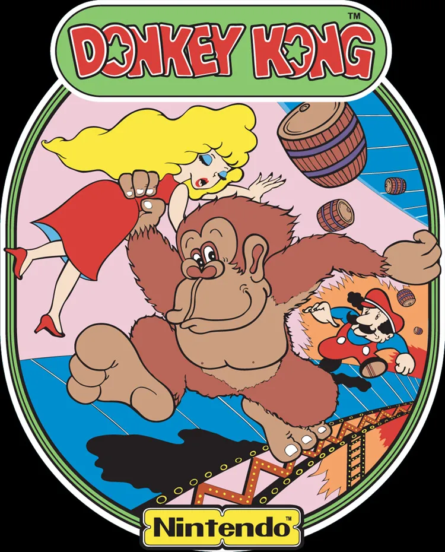
때는 1981년, 닌텐도는 동키콩이란 게임으로 큰 성공을 누리고 있었다.
그런데, 예상치 못한 암초를 만난다.
"닌텐도 니들 제정신?"
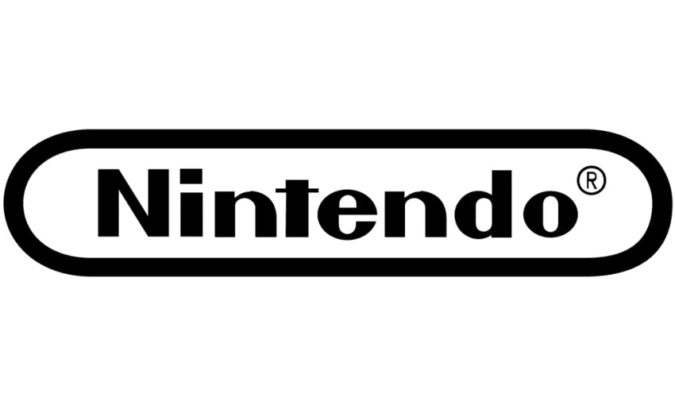
"?"
(메리언 쿠퍼)
"니들이 만든 동키콩이란 게임은 우리가 상표권을 가진 킹콩 캐릭터를 무단도용한 거잖아!
이름도 비슷하고, 미녀를 납치해 높은 곳에 올라간 고릴라란 설정도 판박이네!
우리는 킹콩 창작자 메리언 쿠퍼씨의 아들 리처드 쿠퍼씨한테 1976년 킹콩 상표권을 샀단 말이다!
고소 드간다 ㅋㅋㅋㅋ"
"??????????"
1982년, 유니버설은 닌텐도를 상표권침해로 고소한다.
"하워드 부사장님, 이 재판에서 지면 저희 회사가 날아갑니다 ㅜㅜㅜ"
(닌텐도 미국법인 수석부사장 겸 법률고문 하워드 링컨)
"너무 걱정 하실 거 없습니다.
자꾸 합의를 종용하는 거 보니 점마들도 뭔가 쫄리는 겁니다.
그리고 제가 소송 고인물 변호사도 외부에서 모셔 왔지요."
"안녕하세요, 소송 전문 변호사 존입니다."
하워드와 존은 면밀하게 사건을 살폈고, 1983년 법정이 개정한다.
심리에 나선 건 존이다.
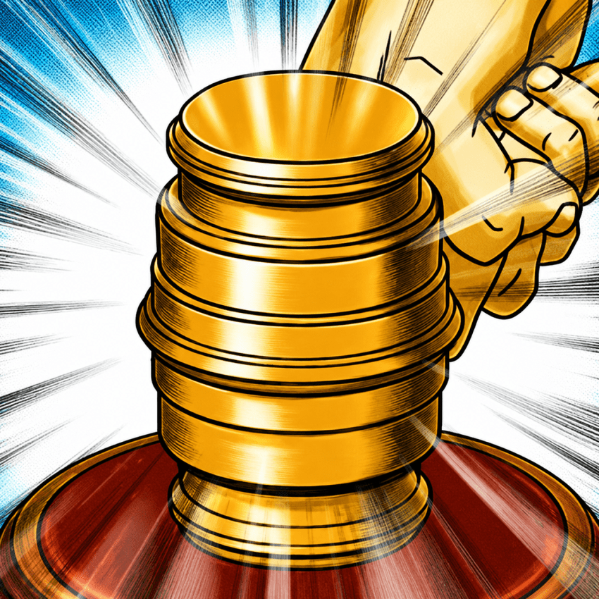
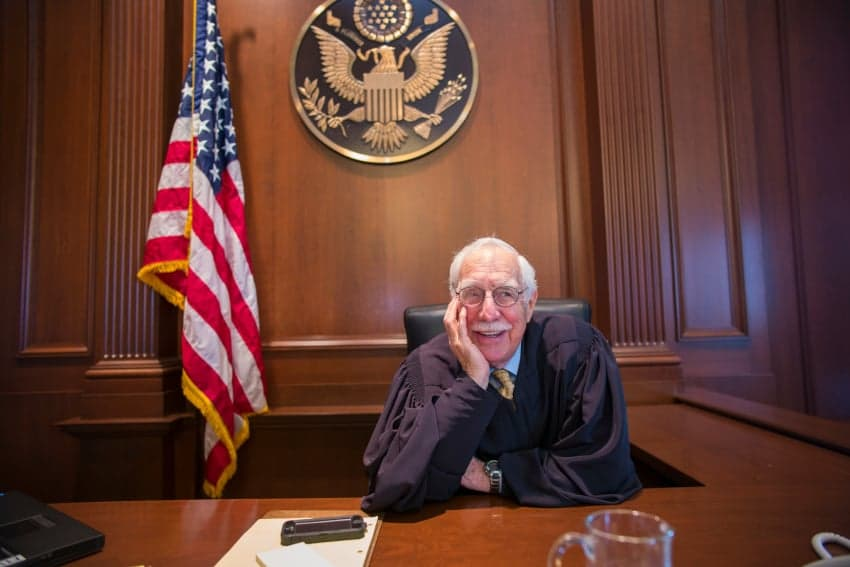
"저는 로버트 스위트 판사입니다.
법정을 개정하겠습니다."
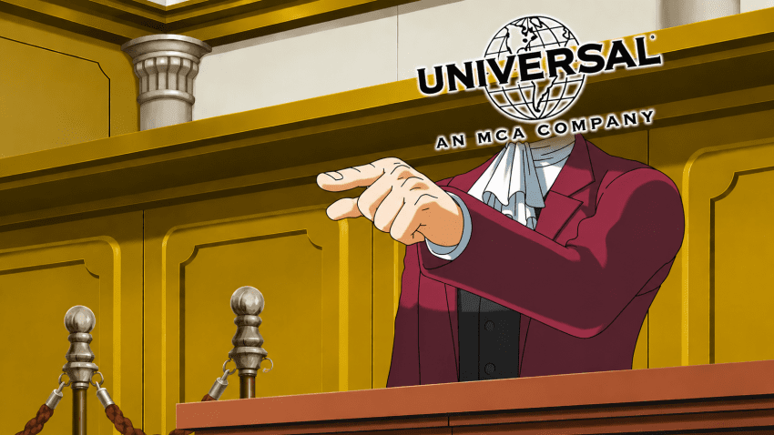
"닌텐도는 동키콩이란 게임으로 저희 킹콩의 상표권을 침해했습니다.
이름과 설정을 보세요. 그냥 표절입니다. 100%."
"이의 있소!!
1. 흉폭한 킹콩과 우스꽝스러운 동키콩은 소비자들이 헷갈리기도 힘들고!
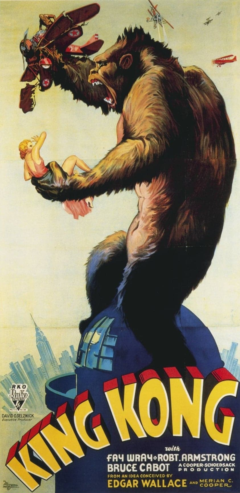
2. 유니버설 너흰 1933년 킹콩 영화 제작사 RKO에서 리처드 쿠퍼씨를 거쳐 너희한테 상표권이 넘어갔다고 주장했지만 제대로 된 양도가 아니고!
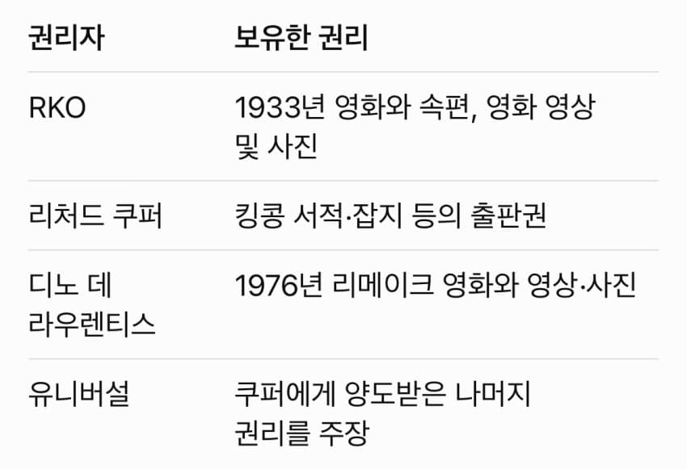
3. 킹콩 저작권은 여기저기 나눠져 있어 유니버설만의 것이 아니고!
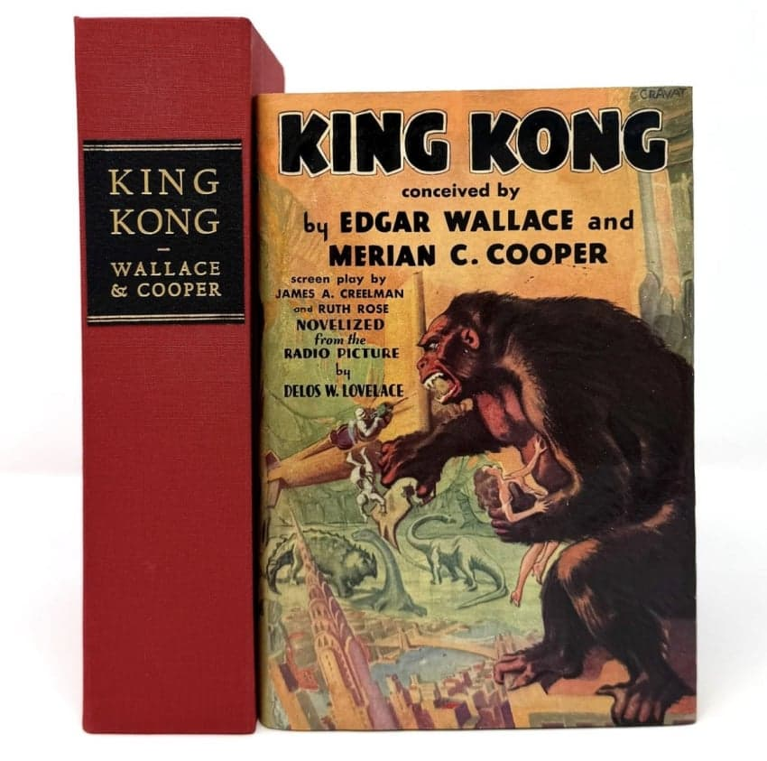
4. 너희들 예전에 RKO랑 소송할 때는, 1932년 출판된 킹콩 소설은 퍼블릭 도메인이라서 소설의 킹콩 이름, 줄거리, 설정 맘대로 써도 된댔잖아!
(퍼블릭 도메인 : 저작자가 저작권을 포기하거나 저작권이 소멸한 저작물)
"어때?"
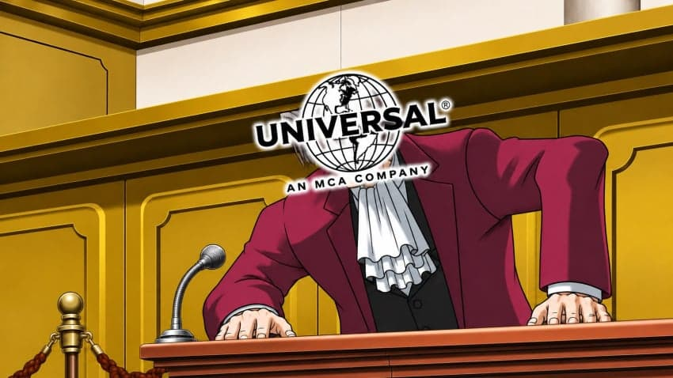
"크아아아아악!"
"닌텐도 측의 주장이 타당하다고 보입니다.
본 법정은 닌텐도의 승소를 선고합니다!"
1986년, 닌텐도는 최종승소한다.
승소로 닌텐도를 살려낸 하워드는 1994년 닌텐도 미국법인 회장 겸 CEO까지 올라간다!!!
존은 어떻게 됐을까?
그는 닌텐도 측에서 보수와 더불어 '동키콩'이라는 8.2m짜리 요트를 선물받았다.
닌텐도는 요트에 '동키콩'이라는 이름을 사용할 수 있는 전 세계 독점 권리도 줬다고 한다.
그리고...
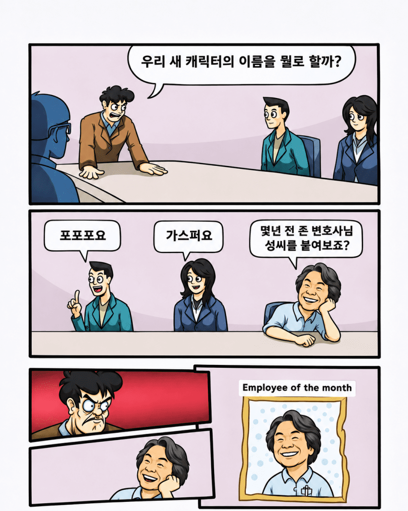
이 캐릭터의 이름은 존 커비 변호사의 이름을 따서 커비가 되었다.
더 정확히 말하면 캐릭터 이름 후보군 중에 커비가 있었고, 미야모토 시게루 등이 존 커비를 떠올리고 지지했다.
100% 이거 때문에 커비가 된 건 아니지만.
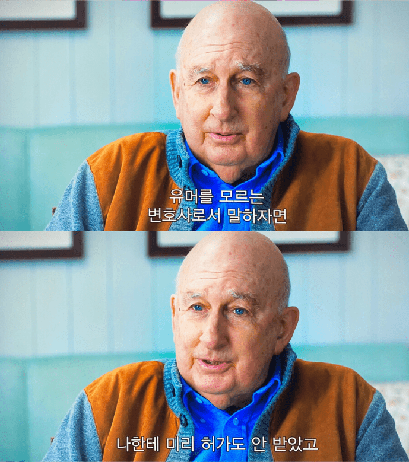
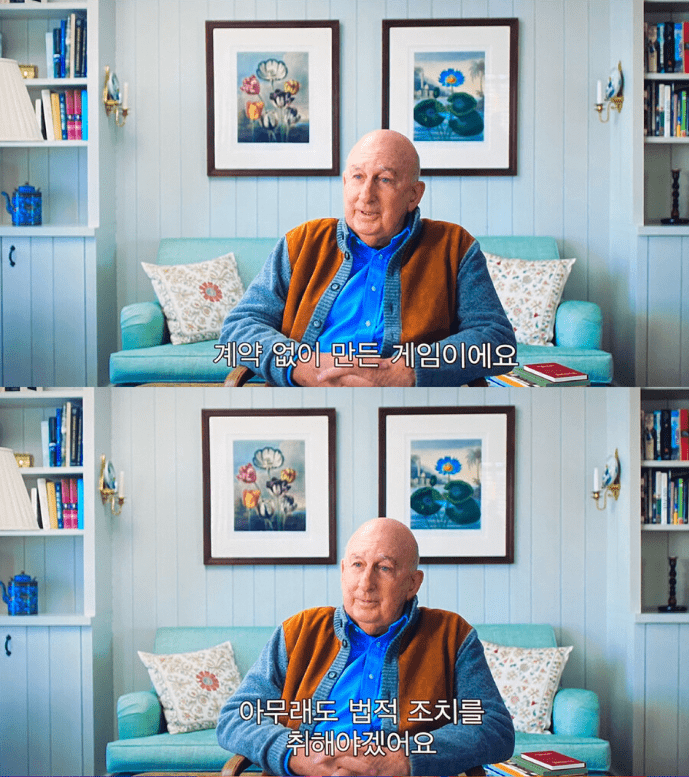
존 커비는 사실을 알고 이런 농담을 했다.
존 커비는 2019년 세상을 떠났지만, 그의 이름은 분홍색 찐빵과 계속 남아있다.
댓글
수집 당시 댓글 52개
빈유좋아 · 11.10 22:19:21
ㅇㅇ · 11.10 22:27:36
땨뗘(봇) · 11.11 20:30:05
ㅇㅇ · 11.11 20:31:22
ㅇㅇ · 11.11 20:32:46
· ㅇㅇ · 11.11 21:05:34
ㅇㅇ · 11.11 20:32:53
ㅇㅇ · 11.11 20:33:00
ㅇㅇ · 11.11 20:33:00
오무오무 · 11.11 20:33:04
00 · 11.11 20:33:26
· ㅇㅇ · 11.12 01:05:24
ㅇㅇ · 11.11 20:33:54
그정도
맞음!!
ㅇㅇ · 11.11 20:34:12
· ㅇㅇ · 11.11 20:35:27
ㅇㅇ · 11.11 20:34:59
かなたん · 11.11 20:35:09
ㅇㅇ · 11.11 20:35:09
ㅇㅇ · 11.11 20:35:41
· ㅇㅇ · 11.11 20:45:51
· ㅇㅇ · 11.11 20:52:06
· ㅇㅇ · 11.12 01:33:58
ㅇㅇ · 11.11 20:35:54
· ㅇㅇ · 11.11 21:06:30
ㅇㅇ · 11.11 20:35:54
ㅇㅇ · 11.11 20:36:34
ㅇㅇ · 11.11 20:37:33
ㅇㅇ · 11.11 20:38:11
ㅇㅇ · 11.11 20:39:48
나쁜말안돼 · 11.11 20:40:38
ㅇㅇ · 11.11 20:40:53
ㅇㅇ · 11.11 20:42:33
ㅇㅇ · 11.11 20:46:13
ㅇㅇ · 11.11 20:47:23
ㅇㅇ · 11.11 20:53:11
두꺼비볶음 · 11.11 20:59:44
피재 · 11.11 21:05:35
비오라트 · 11.11 21:07:41
ㅇㅇ · 11.11 21:15:04
ㅇㅇ · 11.11 21:17:21
디알. · 11.11 21:58:52
msnr · 11.11 22:08:47
ㅇㅇ · 11.11 22:22:39
ㅇㅇ · 11.11 23:43:54
심연의감시자 · 11.11 23:53:34
ㅇㅇ · 11.12 00:06:30
환란 전 교회 휴거 · 11.12 00:13:37
운빨좆망겜 · 11.12 06:46:40
ㅇㅇ · 11.12 06:56:54
코인의마녀 · 11.12 08:25:07
ㅇㅇ · 11.12 10:27:21
ㅇㅇ · 11.12 11:29:33